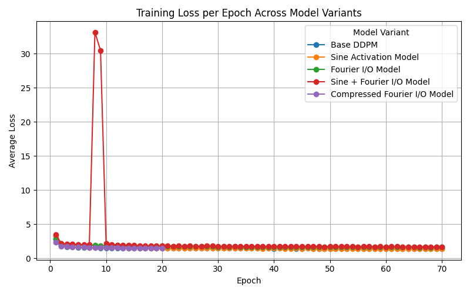
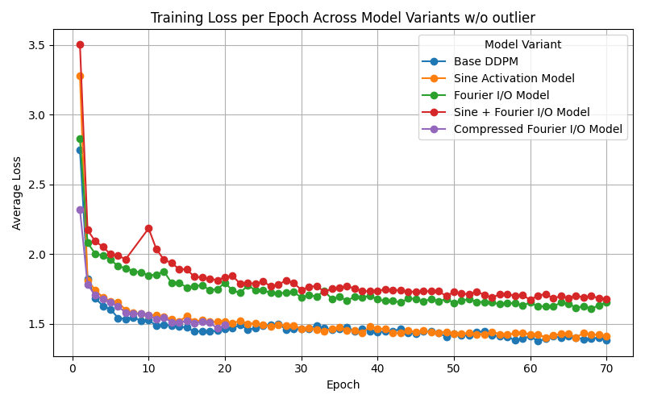
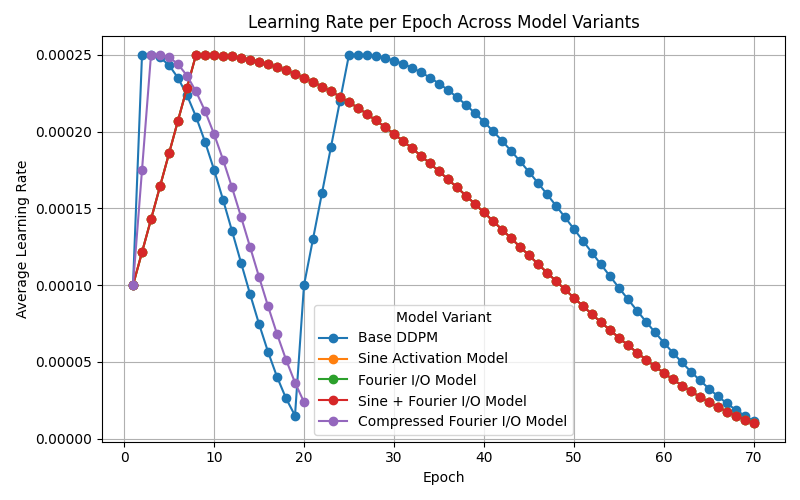
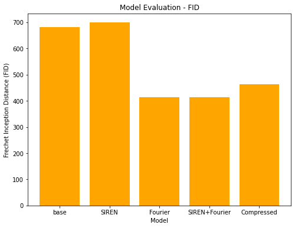
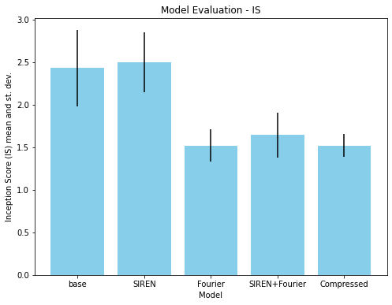
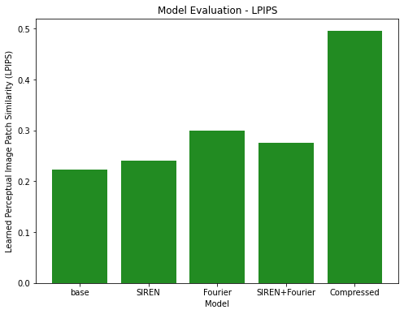
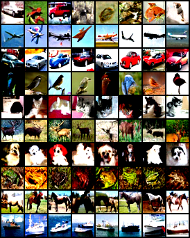
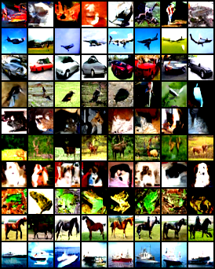
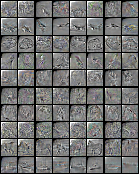
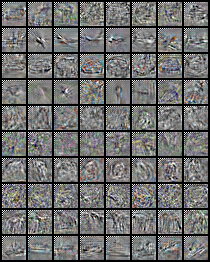

# Spectral Diffusion with Sine Activations
**Garrett Whitmore, Josiah McMenamy**
*May 13, 2025*
# Introduction
Generative modeling has undergone a renaissance with the advent of diffusion based frameworks, which iteratively denoise random noise to synthesize high fidelity images and other modalities. Models such as DDPMs, DDIMs and latent diffusion networks now rival or surpass GAN based approaches on metrics like FID and IS, yet they often incur significant computational and memory overhead, hindering real-time applications and deployment on resource constrained devices.
In parallel, classical signal-processing techniques—particularly those grounded in trigonometric and spectral analysis—have demonstrated remarkable efficacy in encoding geometric structure and dynamic patterns. For example, sine based implicit neural representations capture complex shapes with fewer parameters than conventional activations, and Fourier domain methods have long been the gold standard for isolating and amplifying subtle periodic signals in video.
Motivated by these complementary strengths, our work explores whether injecting explicit frequency biases into diffusion architectures can yield more compact, faster sampling, or higher quality generative models. We begin by surveying existing literature on spectral inductive biases in vision, then detail our framework for integrating sinusoidal activations and Fourier based loss functions into U-Net backbones, transformer blocks, and sampling schedulers. Through comprehensive benchmarking on text to image pipelines and CIFAR-10 subsets, we assess trade offs along axes of sample fidelity, parameter efficiency, and runtime speed.
## Context & Significance
Diffusion models now define the state of the art in text to image synthesis (e.g.\ Stable Diffusion, DALL·E 2), video generation, and restoration tasks on benchmarks such as CIFAR-10 and ImageNet. Despite their success, two key challenges persist:
- *Sampling latency and resource demands*
Modern diffusion pipelines often require hundreds to thousands of network evaluations per sample, translating to seconds or minutes of inference time on high end GPUs and gigabytes of model storage.
- *Spectral Redundancy*
Analyses of learned features reveal a bias toward low frequency content, with high frequency edges and textures underrepresented unless explicitly guided.
Embedding frequency biases—via periodic activation functions or spectral domain operations—offers a promising route to steer capacity toward the most informative bands of the signal, potentially reducing over parameterization and accelerating convergence.
## Research Questions & Objectives
We pose three open ended questions to guide our investigation
- *Can sine activations improve high frequency detail?*
We will augment core U-Net and transformer modules with periodic sine nonlinearities and evaluate edge sharpness, texture fidelity, FID/IS scores, and perceptual quality.
- *Can frequency domain training compress models with minimal quality loss?*
By projecting images into the Fourier basis and training score networks on spectral coefficients, we aim to prune low energy channels and shrink model footprint without degrading output quality.
- *What emergent benefits arise when both techniques are combined?*
Finally, we will integrate sinusoidal activations and Fourier based loss terms into a unified diffusion pipeline, measuring trade offs in parameter count, sampling speed, and diversity of generated samples.
This introduction lays the groundwork for the remainder of the report: reviewing related work, presenting our methodological contributions, detailing experimental results, and discussing implications for next generation generative models.
# Background & Related Work
Recent work has coalesced around two complementary themes relevant to our investigation: the incorporation of periodic, sine-based activations into deep networks, and the movement of diffusion-model training into spectral domains. Below, we review key contributions in each area and highlight the open questions that motivate our study.
## Periodic Activations
The SIREN architecture introduced by Sitzmann *et al.* [[5]](#sitzmann2020siren) demonstrated that replacing standard nonlinearities (ReLU, GELU) with \(\sin\) functions in multilayer perceptrons yields remarkably accurate reconstructions of fine-grained signals (e.g., implicit shape representations, radiance fields). By leveraging the infinite Taylor series of the sine function, SIREN networks can capture arbitrarily high frequencies without resorting to extremely deep or wide layers. However, SIREN’s success has been largely confined to regression and representation tasks rather than generative modeling.
A handful of recent efforts have begun to bridge this gap. Kim *et al.*[[3]](#kim2022maximum) explored maximum-entropy GANs with periodic activation embeddings to encourage sharper texture synthesis, and Wiesner *et al.*[[6]](#wiesner2023generative) applied sine-based residual blocks in a variational autoencoder framework to boost sample fidelity on limited-data regimes. Meanwhile, diffusion pipelines such as DMFFT[[8]](#yu2025dmfft) have experimented with post-hoc frequency manipulation (e.g., Fourier filtering of generated samples) but stop short of embedding sinusoidal units into the denoising network itself.
## Frequency-domain diffusion
In parallel, a growing body of literature has investigated training diffusion models directly on transformed representations of images rather than in the raw pixel domain. The FDDM approach by Zia-Shahabi *et al.*[[10]](#ziashahabi2024fddm) uses discrete cosine transforms (DCT) to decompose images into compact spectral coefficients, learning score functions over only the most informative low- and mid-frequency bands. Phung *et al.*’s WaveDiff[[4]](#phung2023wavelet) further leverages wavelet decompositions to capture multiscale features, reporting faster convergence and reduced sampling steps with negligible FID degradation.
Outside of generative models, spectral techniques have long been exploited for video motion analysis. Eulerian Video Magnification by Wu *et al.*[[7]](#eulerianvideomagnification) converts frames into the Fourier domain to isolate periodic intensity variations, then amplifies subtle motions invisible to the naked eye. Although powerful, this work remains orthogonal to diffusion-based denoising and has not been integrated into score-based generative frameworks.
## Gap in the literature
To date, no study has simultaneously embedded periodic activation functions *and* leveraged spectral-domain inputs within the core denoising architecture of a diffusion model. Our project addresses this gap by systematically evaluating:
- *Architectural biases*: augmenting U-Net and transformer blocks with sin activations at key layers
- *Representational biases*: training on Fourier (or DCT/wavelet) coefficients rather than raw pixels
- *Combined effects*: measuring interaction effects when both biases coexist, in terms of sample quality, model size, and inference speed
By unifying these two strands—periodic nonlinearities and frequency-domain processing—our work explores a novel design space for diffusion models that may unlock new trade-offs in efficiency and fidelity.
# Methods & Experimental Design
## Model Variants
We will implement and evaluate four diffusion model variants to isolate the effects of sinusoidal activations and frequency-domain training: (1) a baseline DDPM model using standard ReLU or SiLU activations trained on RGB images[[2]](#ho2020denoising), (2) a model using sine activations in the denoising U-Net[[5, 3]](#references), (3) a model trained in the Fourier domain by converting images to DCT coefficients[[10]](#ziashahabi2024fddm), and (4) a hybrid model combining both sine activations and Fourier-domain training. All models will be based on the standard U-Net architecture used in DDPM[[2]](#ho2020denoising), trained on CIFAR-10 at 32$\times$32 resolution to ensure manageable runtime. The base model is a standard DPPM architecture
### Base DDPM + Classifier-Free Guidance
Our core denoising network is a U-Net with both timestep and class embeddings, as implemented in the Zoubohao DDPM repository [[11]](#zoubohao_ddpm_commit54532d6). In brief:
- **Input Head:** a \(3\times3\) convolution mapping the 3-channel noisy image into \(ch\) feature maps.
- **Time Embedding:** sinusoidal positional embeddings for each diffusion timestep \(t\in[1,T]\), passed through two linear layers with Swish activations.
- **Conditional Embedding:** learned embeddings for class labels (with a “null” index to enable unconditional sampling), likewise projected by a small MLP with Swish.
- **Downsampling Path:** a cascade of *ResBlocks* (GroupNorm → Swish → Conv), each injecting the time and class embeddings via linear projections, interleaved with strided convolutions to reduce spatial resolution.
- **Bottleneck:** two ResBlocks at the lowest resolution, one augmented by a self attention block (channel wise GroupNorm → \(1\times1\) projections → softmax attention → reprojection).
- **Upsampling Path:** symmetric ResBlocks that concatenate skip connections from the down path, followed by transpose convolutions to restore original spatial dimensions.
- **Output Tail:** GroupNorm → Swish → \(3\times3\) convolution to predict the noise residual.
During training, the class embedding is randomly dropped (set to the “null” token) to implement classifier free guidance, allowing both conditional and unconditional sampling within the same network.
### Sine Activation Variant
This variant inherits the exact U-Net + classifier-free guidance architecture from Zoubohao et al.\ [[11]](#zoubohao_ddpm_commit54532d6), but replaces every Swish activation and small MLP with a periodic Sine layer as in SIREN [[5]](#sitzmann2020siren). In particular:
- **Time and Class Embeddings:** the two-layer MLP that projects sinusoidal positional embeddings (for \(t\)) and the conditional embedding (for class labels) now uses a \texttt{SineLayer} ($\omega_0$=30) in place of the final Swish + Linear.
- **ResBlocks:** within each residual block, the GroupNorm -> Swish -> Conv sequence is replaced by GroupNorm -> \texttt{SineAct}($\omega_0$=1.0) -> Conv, and the two small linear projections of \(\mathrm{temb}\) and \(\mathrm{cemb}\) also use \texttt{SineLayer}.
- **Output Tail:** the final normalization and activation before the last, \(3\times3\) convolution uses \texttt{SineAct} instead of Swish. Using a smaller omega here was needed to prevent blow up in loss.
All other components—down/upsampling blocks, self attention bottleneck, skip connections, and the GradualWarmupScheduler—remain identical to the base model.
### Fourier Domain I/O Variant
This variant retains the identical U-Net + classifier-free guidance backbone from Zoubohao et al.\ [[11]](#zoubohao_ddpm_commit54532d6), but shifts all data into the frequency domain:
- **Training:** each input batch of normalized CIFAR-10 images is transformed with a 2D DCT (\texttt{dct\_batch}), and the network is trained to predict the noise residual in DCT coefficient space rather than pixel space.
- **Inference:** at sampling time, the U-Net outputs a tensor of DCT coefficients; these are converted back to RGB images via an inverse 2D DCT (\texttt{idct\_batch}) so that results can be visualized.
- **Everything else:** optimizer, warm-up + cosine LR schedule, network depth/width, attention blocks, and classifier-free guidance dropout—all remain unchanged from the base DDPM.
### Sine Activation with Fourier Domain I/O Variant
This model unites the periodic activations of the Sine-Activation variant [[5]](#sitzmann2020siren) with the frequency-domain I/O of the Fourier variant, all on top of the base DDPM + classifier-free U-Net [[11]](#zoubohao_ddpm_commit54532d6):
- **Architecture:** every Swish activation and small MLP in the U-Net (time embeddings, class embeddings, ResBlocks, and output tail) is replaced by a \texttt{SineLayer} or \texttt{SineAct} (\\(\omega_0 = 1.0\\)), as in SIREN.
- **Training I/O:** each input batch is mapped to DCT coefficients via a 2D DCT (\texttt{dct\_batch}), and the network predicts noise in the DCT domain.
- **Inference I/O:** the model’s DCT domain outputs are converted back to RGB images via inverse 2D DCT (\texttt{idct\_batch}) for visualization.
- **Other components:** optimizer, GradualWarmupScheduler + CosineAnnealingLR, self attention bottleneck, skip connections, and classifier-free guidance dropout remain identical to the base implementation.
### Compressed Fourier Domain I/O Variant
Building on the Fourier I/O variant [[11]](#zoubohao_ddpm_commit54532d6), this model further reduces spectral dimensionality by cropping out the highest frequency coefficients:
- **Spectral Cropping:** after computing the 2D DCT of each \(32\times32\) image, we retain only the top left \(24\times24\) block of coefficients (discarding the bottom/right 8×8 region that encodes fine grained, high frequency details).
- **Training \& Inference:** the network is trained and sampled entirely on these \(24\times24\) DCT inputs/outputs, with an inverse DCT applied at evaluation time to visualize reconstructions in pixel space.
- **All other aspects** (U-Net backbone, classifier free guidance, optimizer, LR schedule, attention and skip connections) remain identical to the base DDPM implementation.
## Training Setup
Thinking about leaving this out
## Evaluation Metrics
To evaluate these variants, we will use standard metrics for generative modeling: Fréchet Inception Distance (FID) to assess overall sample quality and diversity[[2]](#ho2020denoising), Inception Score (IS) for confidence and variation in image class assignments[[2]](#ho2020denoising), and LPIPS to estimate perceptual similarity and diversity[[9]](#zhang2018unreasonable).
## Hypotheses & Assumptions
Our hypothesis is that sine activations will improve the model’s ability to preserve high-frequency image content, especially in later diffusion steps[[5, 3]](#references), and that training in the frequency domain will help the model more efficiently reconstruct details[[10, 4]](#references). Additionally, the Fourier domain offers an avenue for compression: by dropping out some of the higher frequencies, we may be able to save space while minimally lowering the quality of the model. This concept aligns with traditional image compression techniques, such as JPEG, which leverage the Fourier transform to discard high-frequency components with minimal perceptual loss[[1]](#imagecompression). Exploring this in the context of diffusion models could reveal trade-offs between model size and output fidelity.
# Results & Analysis
## Quantitiative Comparisons
<div id="fig-loss" style="text-align:center">

<strong>Figure 1</strong>
</div>
<br />
<div id="fig-loss-no-outlier" style="text-align:center">

<strong>Figure 2</strong>
</div>
<br />
<div id="fig-learning-rate" style="text-align:center">

<strong>Figure 3</strong>
</div>
<br />
<h3>Training Metrics</h3>>
Figure [[3]](#fig-learning-rate) shows that all five variants share similar cosine annealing learning rate schedules, with a brief warm up to \(2.5\times10^{-4}\) by epoch 2-3, then a smooth decay toward \(\sim1\times10^{-5}\) over their training runs. The compressed Fourier model, trained for only 20 epochs, follows the same pattern but decays more rapidly to \(\approx2.4\times10^{-5}\) by its final epoch. The base ddpm model and sine activation model have nearly identical learning rate curves, and the same is true for the fourier i/o and sine activation fourier i/o models.
Turning to the loss curves (Figure [[1]](#fig-loss) and[[2]](#fig-loss-no-outlier)), the *baseline DDPM* converges fastest and reaches the lowest training loss (\(\approx1.38\) by epoch 70). The *sine activation* model trails closely (\(\approx1.41\)), suggesting that replacing ReLUs with sinusoids alone offers minimal benefit on CIFAR-10 at \(32\times32\) resolution. The *Fourier I/O* model converges more slowly and levels off at a higher loss (\(\approx1.65\)), indicating that operating entirely in DCT space adds optimization difficulty—likely because the network must learn to manipulate highly correlated frequency coefficients rather than spatial pixels.
The *hybrid (sine + Fourier)* variant suffered two catastrophic gradient blow ups at epochs 7-8 (loss \(>30\)), visible as the red spikes in Figure [[1]](#fig-loss). Once those outliers are removed (Figure [[2]](#fig-loss-no-outlier)), it recovers and gradually converges to \(\approx1.67\) by epoch 70—worse than the pure Fourier model. This instability suggests that combining high frequency sine nonlinearity with frequency domain inputs amplifies training sensitivity (e.g., to initialization, learning rate, or gradient clipping).
Finally, the *compressed Fourier* model—where we keep only the top-left block of \(24\times24\) DCT coefficients as input—reaches \(\approx1.49\) loss in just 20 epochs. Although it doesn’t beat the baseline or sine models, it outperforms the full Fourier variant, implying that reducing spectral dimensionality gives a regularization effect and eases optimization. Due to resource constraints, this model was not trained for $70$ epochs like the other models.
<h3>Evaluation Metrics</h3>
<div id="fig-fid" style="text-align:center">

<!-- <br /> -->
<strong>Figure 4: Fréchet Inception Distance (FID) for each model variant. Lower is better.</strong>
</div>
<br />
Figure [[4]](#fig:fid) reports the Fréchet Inception Distance (FID) for each of our five model variants. Both the pure Fourier I/O model (FID = 413.9) and the hybrid SIREN + Fourier model (FID = 413.2) achieve dramatic reductions in FID compared to the pixel space baselines (baseline = 681.9, SIREN = 699.5). The compressed Fourier model retains much of this benefit (FID = 463.9) despite only keeping the top left 24 x 24 block of DCT coefficients. This shows that operating in frequency space—and even aggressively downsampling the spectrum—can significantly improve the match to the Inception feature statistics that FID measures.
<div id="fig-is" style="text-align:center">

<strong>Figure 5: Inception Score (IS) for each model variant. Higher is better.</strong>
</div>
<br />
Figure [[5]](#fig:is) shows the Inception Score (IS) with standard deviation error bars. Here we see the opposite trend: the pixel space models score highest (baseline = 2.43 ± 0.45, SIREN = 2.50 ± 0.35), while all frequency domain variants suffer a drop in class conditional confidence and diversity (Fourier = 1.52 ± 0.19, hybrid = 1.64 ± 0.26, compressed = 1.52 ± 0.14). In other words, although Fourier based training aligns the generated images more closely with Inception statistics (low FID), it seems to undermine high level semantic features that IS captures.
<div id="fig-lpips" style="text-align:center">

<strong>Figure 6: LPIPS for each model variant. Lower is better.</strong>
</div>
<br />
Finally, Figure [[6]](#fig:lpips) plots the Learned Perceptual Image Patch Similarity (LPIPS). Lower LPIPS indicates closer perceptual similarity to ground truth images. The baseline (0.223) and SIREN (0.240) models outperform all Fourier variants, with the pure Fourier model at 0.300 and the hybrid at 0.275. The compressed Fourier model fares worst (0.496), suggesting that discarding spectral components severely degrades low level perceptual fidelity.
<h2>Qualititative Comparisons </h2>
<div style="display: flex; justify-content: center; gap: 1em; flex-wrap: wrap;" id="fig-outputs">
<div style="flex: 1; text-align: center; min-width: 300px;" id="fig-base">

<div><strong>(a)</strong> Base model output</div>
</div>
<div style="flex: 1; text-align: center; min-width: 300px;" id="fig-siren">

<div><strong>(b)</strong> SIREN-adjusted model output</div>
</div>
</div>
<div style="text-align: center; margin-top: 0.5em;">
<strong>Figure 7:</strong> A comparison of the outputs from the (a) base and (b) SIREN-adjusted models.
</div>
<br />
<div style="display: flex; justify-content: center; gap: 1em; flex-wrap: wrap;" id="fig-fourier-outputs">
<div style="flex: 1; text-align: center; min-width: 300px;" id="fig-fourier-norm">

<div><strong>(a)</strong> 32x32 uncompressed model</div>
</div>
<div style="flex: 1; text-align: center; min-width: 300px;" id="fig-fourier-norm-compressed">

<div><strong>(b)</strong> 24x24 compressed model</div>
</div>
</div>
<div style="text-align: center; margin-top: 0.5em;">
<strong>Figure 8:</strong> A comparison of the outputs of the Fourier-domain models trained for (a) 32 x 32 images and (b) 24 x 24 images.
</div>
<br />
Sample outputs for four of the model types are shown in Figures [[7]](#fig-outputs) and [[8]](#fig-fourier_outputs). First we explore the baseline model and compare it to the SIREN adaptation. Qualitatively, both produce decent results. In-class samples are very clearly related and distinguishable without the context of other images in their class in most cases. Even under more careful scrutiny, it becomes difficult to prefer one model over another. Both exhibit artifacts of inaccuracy that are likely a result of the simplicity and smaller size of the base model, however, given the resource constraints and time interest, these results are quite satisfying.
Second, we explore the outputs of the models with Fourier input for both the full-size 32 x 32 images and the compressed 24 x 24 inputs. There are many potential ways to describe the reason these images appear they way they do. In performing the DCT to prepare the images for training and evaluation, some information naturally gets lost. As with any discrete transform, this is unavoidable. It may not be reasonable to assume that a base U-Net adapted to perform a task like this at its current size and ability. Considering its imperfect representation of finer-detailed information for the base and SIREN-adapted models, one can only imagine how much more difficult it would be when the model is presented with such small important details as a DCT transform. These statements reflect what is seen in Figure [[8]](#fig:fourier_outputs). With most intricate details gone, the image is left with the basic foundational structures that are expected. This is true for both full-sized and compressed models. As the lower-frequency components are the largest and most dramatically expressed components in the Fourier domain, they are maintained throughout training and the outputs reflect that. Although they appear to be more of a Sobel filter convolved with the expected image, it is clear that the model has learned from the DCT-transformed image and is able to represent these features in the latent space and produce them according to a label input.
<!-- \begin{figure*}[t]
\centering
% first image
\includegraphics[width=\linewidth]{images/SampledGuidenceImgs_base.png}
\subcaption{\label{fig:base}Base model output}
\end{subfigure}%
\hspace{0.02\linewidth}
% second image
\includegraphics[width=\linewidth]{images/SampledGuidenceImgs_siren.png}
\subcaption{\label{fig:siren}SIREN-adjusted model output}
\caption{A comparison of the outputs from the (a) base and (b) SIREN-adjusted models.}
\label{fig:outputs} -->
<!-- \begin{figure*}[t]
\centering
\centering{\includegraphics[alt={sample image},width=0.99\textwidth]{images/SampledGuidanceImgs_fourier_nodct_norm.png}}%
\subcaption{\label{fig:fourier_norm}}
\hspace{0.02\linewidth}
\centering{\includegraphics[alt={sample image},width=0.99\textwidth]{images/SampledGuidanceImgs_fourier_nodct_norm_compressed.png}}%
\subcaption{\label{fig:fourier_norm_compressed}}%
\end{subfigure}%
\caption{A comparison of the outputs of the Fourier-domain models trained for (a) 32 x 32 images and (b) 24 x 24 images.
\label{fig:fourier_outputs}} -->
### Interpretation & Tradeoffs
These results reveal a clear trade off:
- **FID vs.\ IS/LPIPS:** Frequency domain training (both full and compressed) yields the best FID but at the cost of significantly lower IS and higher LPIPS.
- **Hybrid vs.\ pure Fourier:** The hybrid SIREN + Fourier model offers marginal FID improvement over pure Fourier (413.2 vs.\ 413.9) but does not recover semantic (IS) or perceptual (LPIPS) quality.
- **Spectral compression:** Trimming from the bottom right of the DCT block still delivers a substantial FID boost (463.9 vs.\ 681.9) and faster training, but incurs the steepest perceptual penalty (LPIPS = 0.496).
\noindent In summary, pixel space diffusion (baseline and SIREN) remains optimal when high level semantics and perceptual fidelity matter. Frequency domain variants excel at matching Inception statistics (FID) but sacrifice class coherence and fine detail fidelity. Future work might explore hybrid loss functions (combining FID with LPIPS penalties), alternative spectral transforms (e.g.\ wavelets), or adaptive frequency band weighting to balance these trade offs.
# Conclusion
## Summary
We have trained and evaluated five variants of a conditional DDPM with classifier free guidance on CIFAR-10 (32×32):
- *Baseline DDPM* (standard U-Net, ReLU/SiLU),
- *Sine-Activation DDPM* (all Swish nonlinearities replaced by SIREN style sine layers),
- *Fourier I/O DDPM* (inputs and outputs are 2D DCT coefficients),
- *Hybrid DDPM* (combines sine activations with DCT I/O),
- *Compressed Fourier DDPM* (DCT I/O cropped to 24×24, discarding highest-frequency bands).
Across 70 epochs (20 for the compressed model), the baseline converged fastest (final loss ≈1.38), followed closely by the sine model (≈1.41). The full Fourier variant plateaued higher (≈1.65), and the hybrid was unstable early on before settling around ≈1.67. The compressed model reached ≈1.49 in just 20 epochs. All models shared the same cosine-annealed learning-rate schedule with warm-up, peaking at 2.5×10⁻⁴ and decaying toward 1×10⁻⁵.
In quantitative metrics, pixel-space models scored best on IS (baseline 2.43±0.45, sine 2.50±0.35) and LPIPS (baseline 0.223, sine 0.240), but worst on FID (baseline 681.9, sine 699.5). Conversely, Fourier variants excelled at FID (Fourier 413.9, hybrid 413.2, compressed 463.9) but sacrificed semantic confidence (IS ≈1.5-1.6) and perceptual fidelity (LPIPS ≥0.275). Qualitatively, baseline and sine models produced the sharpest class-coherent samples; Fourier outputs displayed smoother textures but blurrier edges; compressed Fourier exhibited the coarsest reconstructions with missing fine details.
## Future Work
- **Sine activations:** systematically fine-tune the $\omega_0$ hyperparameters (e.g.\ first layer vs.\ deeper layers) to stabilize training and sharpen high-frequency recovery.
- **Spectral transforms:** explore complex Fourier representations (e.g.\ Short-Time Fourier Transform or Complex valued FFT) or wavelet based decompositions (e.g.\ Haar or Daubechies), preserving phase information for more interpretable reconstructions.
- **Compressed model:** extend training of the 24×24 spectral variant to 70+ epochs to verify whether its lower-dimensionality regularization consistently maintains low loss.
- **Scaling architectures:** evaluate these techniques on larger backbones (e.g.\ deeper U-Nets or transformer based score networks such as Swin or Vision Transformers) to assess generalization beyond small CIFAR-10 settings.
- **Additional directions:** investigate adaptive frequency band weighting in the loss function, hybrid pixel-spectral multi task objectives, and dynamic spectral cropping based on learned importance.
___
<!-- <small>&copy; 2022 [Y. Liu](https://github.com/liuyang12), powered by [`strapdown.js`](https://ndossougbe.github.io/strapdown/), [Markdown](https://ndossougbe.github.io/strapdown/demos/markdown_syntax.html), and [MathJax 3](https://www.mathjax.org/) for \\(\LaTeX\\) rendering.</small> -->
<small><h1 id="references">References</h1></small>
<ol style="line-height: 1.5; font-size: 0.95em; padding-left: 1.2em; max-width: 800px; margin: auto;">
<li id="imagecompression">
Nasir Ahmed, T. Natarajan, and Kamisetty R. Rao. “A Discrete Cosine Transform Approach to Image Compression.”
<em>Proceedings of the IEEE</em>, vol. 63, no. 4, IEEE, 1975, pp. 519–530.
</li>
<li id="ho2020denoising">
Jonathan Ho, Ajay Jain, and Pieter Abbeel. “Denoising Diffusion Probabilistic Models.”
<em>Advances in Neural Information Processing Systems</em>, vol. 33, 2020, pp. 6840–6851.
</li>
<li id="kim2022maximum">
Minjun Kim et al. “Maximum Likelihood Training of Implicit Diffusion Models.”
<em>Advances in Neural Information Processing Systems (NeurIPS)</em>, 2022.
</li>
<li id="phung2023wavelet">
Duy Phung et al. “Wavelet Diffusion Models are Fast and Scalable Image Generators.”
<em>Proceedings of the IEEE/CVF Conference on Computer Vision and Pattern Recognition</em>, 2023, pp. 653–663.
</li>
<li id="sitzmann2020siren">
Vincent Sitzmann et al. “Implicit Neural Representations with Periodic Activation Functions.”
<em>Advances in Neural Information Processing Systems</em>, vol. 33, 2020, pp. 7462–7473.
</li>
<li id="wiesner2023generative">
Max Wiesner et al. “Generative Modeling of Living Cells with SO(3)-Equivariant Implicit Neural Representations.”
<em>Medical Image Analysis</em>, vol. 84, 2023, p. 102710.
</li>
<li id="eulerianvideomagnification">
Hao-Yu Wu et al. “Eulerian Video Magnification for Revealing Subtle Changes in the World.”
<em>ACM Transactions on Graphics</em>, vol. 31, no. 4, July 2012.
<a href="https://doi.org/10.1145/2185520.2185561" target="_blank">https://doi.org/10.1145/2185520.2185561</a>
</li>
<li id="yu2025dmfft">
Qian Yu et al. “DMFFT: Improving the Generation Quality of Diffusion Models Using Fast Fourier Transform.”
<em>Scientific Reports</em>, vol. 15, no. 1, 2025, pp. 1–14.
</li>
<li id="zhang2018unreasonable">
Richard Zhang et al. “The Unreasonable Effectiveness of Deep Features as a Perceptual Metric.”
<em>Proceedings of the IEEE Conference on Computer Vision and Pattern Recognition</em>, 2018, pp. 586–595.
</li>
<li id="ziashahabi2024fddm">
Arian Ziashahabi, Ahmad Beirami Kashani, and Karteek Alahari. “Frequency Domain Diffusion Model with Scale-Dependent Noise.”
<em>arXiv preprint</em> arXiv:2401.11345, 2024.
</li>
<li id="zoubohao_ddpm_commit54532d6">
Bohao Zou. <em>DenoisingDiffusionProbabilityModel-ddpm-</em>. GitHub repository, commit 54532d61d4007cd743d414.
Accessed: May 12, 2025.
<a href="https://github.com/zoubohao/DenoisingDiffusionProbabilityModel-ddpm-" target="_blank">
https://github.com/zoubohao/DenoisingDiffusionProbabilityModel-ddpm-
</a>
</li>
</ol>